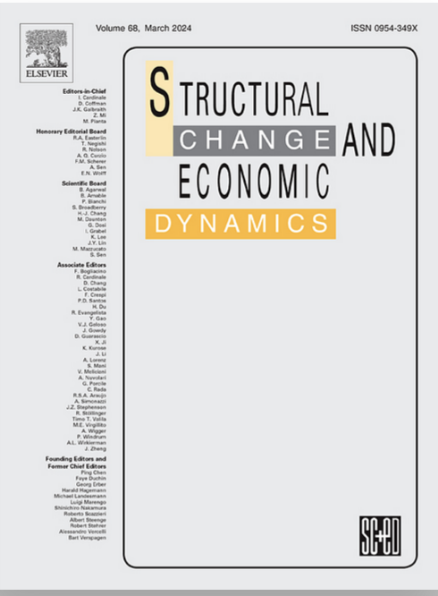
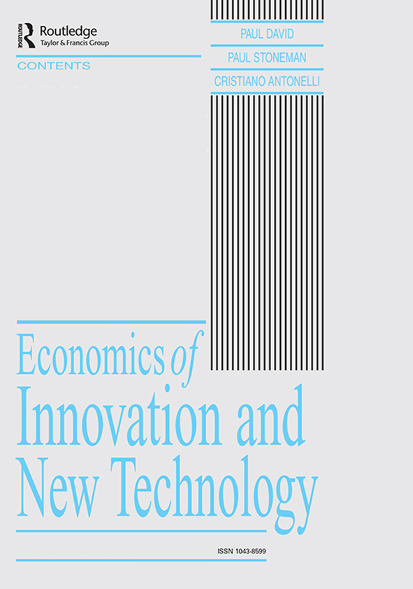
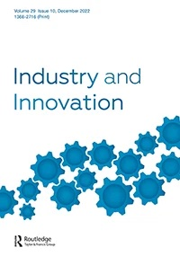
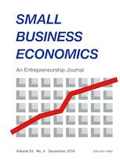
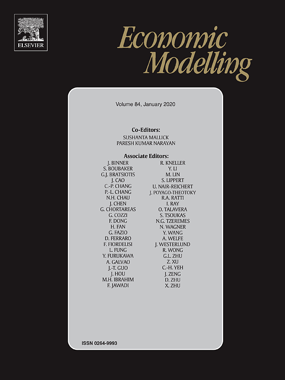

| Leoncini R. (2025), Tullio Martello. Un garibaldino
all'Università di Bologna, in: Legnani Annichini A.
Sarti N. (a cura di) Maestri sotto concorso Le
prime tornate del reclutamento nelle Facoltà
giuridiche dei grandi Atenei del Regno d’Italia
(1860-1896), Il Mulino, Bologna. |
|
| Leoncini R., Macaluso M., Polselli A. (2024),
Gender segregation: analysis across sectoral dominance
in the UK labour market, Empirical
Economics. |
|
| Cefis E., Leoncini R., Marengo L. (2024), Is
innovation failure just a dead end?, Structural Change and
Economic Dynamics. |
 |
| Leoncini R. (2024), Economia, in: Cavina M., Legnani
Annichini A. (a cura di) Docta suas secum duxit
Bononia leges. Storia della Facoltà di
Giurisprudenza di Bologna (XIX-XX secolo),
Il Mulino, Bologna. |
|
| Guidetti G., Leoncini R. (2024), Polarization in
wage and employment. The role of technological change,
in: Jodhka S., Rehbein B. (eds.) Global
Handbook of Inequality, Springer, Cham. |
|
| Guidetti G., Leoncini R. (2024), Wealth and
Inequality, in: Jodhka S., Rehbein B. (eds.) Global
Handbook of Inequality, Springer, Cham. |
|
| Antonelli G., Leoncini R. (2024), Economia politica
e studi giuridici all'Università di Bologna in G. de
Vergottini A., Zanobetti (a cura di), La vocazione
di formare giuristi. Maestri e insegnamenti della
Facoltà giuridica bolognese, Accademia
delle Scienze Mens Agitat - Colloquia, Bologna
University Press. |
|
| Cattani L., Guidetti G., Leoncini R. (2024),
Innovation and inequality. A Schumpeterian look at the
skill premium, Economics
of Innovation and New Technology. |
 |
| Cefis E., Leoncini R., Marengo L., Montresor S.
(2023), Firms and innovation in the new industrial
paradigm of the digital transformation, Industry and Innovation.
|
 |
| Bonello V., Faraone C., Leoncini R., Nicoletto L.,
Pedrini G. (2022), (Un)making space for manufacturing
in the city: The double edge of pro-makers urban
policies in Brussels, Cities.
|
|
| Cattani L., Guidetti G., Leoncini R. (2021), Impact
of innovation activities on employment and inequality
at micro- and macro level, in Leal Filho W., Azul
A.M., Brandli L., Lange Salvia A., Wall T. (eds.), Industry,
Innovation and Infrastructure. Encyclopedia of the
UN Sustainable Development Goals,
Springer, Cham. |
|
| Leoncini R., Vecchiato G., Zamparini L. (2020),
Firms cooperation for innovation and competitiveness.
An analysis of Italian network contracts law, Economia Politica. |
|
| Leoncini R., Marzucchi A., Montresor S., Rentocchini
F., Rizzo U. (2019), 'Better late than never'. A
longitudinal quantile regression approach to the
interplay between green technology and age for firm
growth, Small
Business Economics. |
 |
| Zhang J., Leoncini R., Tsai Y. (2018), Intellectual
property rights protection, labour mobility and wage
inequality, Economic
Modelling. |
 |
| Leoncini R. (2018), Innovation and inequality, in
Rehbein B., Antonelli G. (eds.), Inequality in
Economics and Sociology, Routledge,
London. |
|
| Antonelli G., Leoncini R. (2017), Smart development,
local production systems and related variety, in
Antonelli G., Cappiello G. (eds.), Smart
Development in Smart Communities,
Routledge. |
|
| Leoncini R., Montresor S., Rentocchini F. (2016), CO2-reducing
innovations and outsourcing: evidence from
photovoltaics and green construction in North–East
Italy, Research Policy. |
|
| Antonietti R., Ferrante M., Leoncini R. (2016),
Local market size, social capital and outsourcing:
evidence from Emilia Romagna, Small
Business Economics. |
|
| Leoncini R. (2016), Learning-by-failing. An
empirical exercise on CIS data, Research Policy. |
|